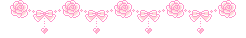
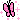

Sobre mí
✧ sobre mí


Alejandra Marín
ilustradora · 1999 · cartagena, murcia
Soy ilustradora española. Trabajo con distintas disciplinas, aunque la ilustración suele ser mi medio principal.
Me gusta trabajar con historias y crear estéticas femeninas y fantásticas. Creo que la estética cambia por completo la forma en la que experimentamos algo, por eso llevo mi arte más allá, explorando su funcionalidad en aplicaciones, juegos, proyectos y universos visuales enteros.
Soy autodidacta y mi motor es seguir explorando. Cuantas más experiencias recoja, más podré ampliar mi forma de ver y crear.
✧ datos
- 🇪🇸nacionalidad: española
- fan del café (y sin azúcar)
- internet + libros = feliz

gamer frustrada por no tener tiempo
cafeína
80%
✧ idiomas
españolnativo
inglésB2
francésA2
✧ softwares
ProcreatePhotoshopWordpressCap cutCanvaVisual Studio Code
✧ estudios
- 2022 — hoyFormación autodidactacursos online, práctica diaria y proyectos propios
- 2024TFG Viabilidad del Webmanga en el contexto de la web39.2 propuesto para matricula de honor
- 2023ErasmusThe Eugeniusz Geppert Academy of Art and Design in Wroclaw
- 2018-2023Grado en Bellas artesCursado a medias en la UCLM (cuenca) y la UMU (Murcia)
✧ experiencia
- 2023 — hoyIlustradora freelanceencargos editoriales, colaboraciones con marcas y proyectos propios
- 2023EnseñanzaProfesora de dibujo en la academia Pinta con Vincent - Clases particulares de pintura y dibujo
- 2021Startup tecnológicaParticipación en el desarrollo de proyectos en la web3
- 2018ExposicionesParticipación en exposiciones colecctivas,